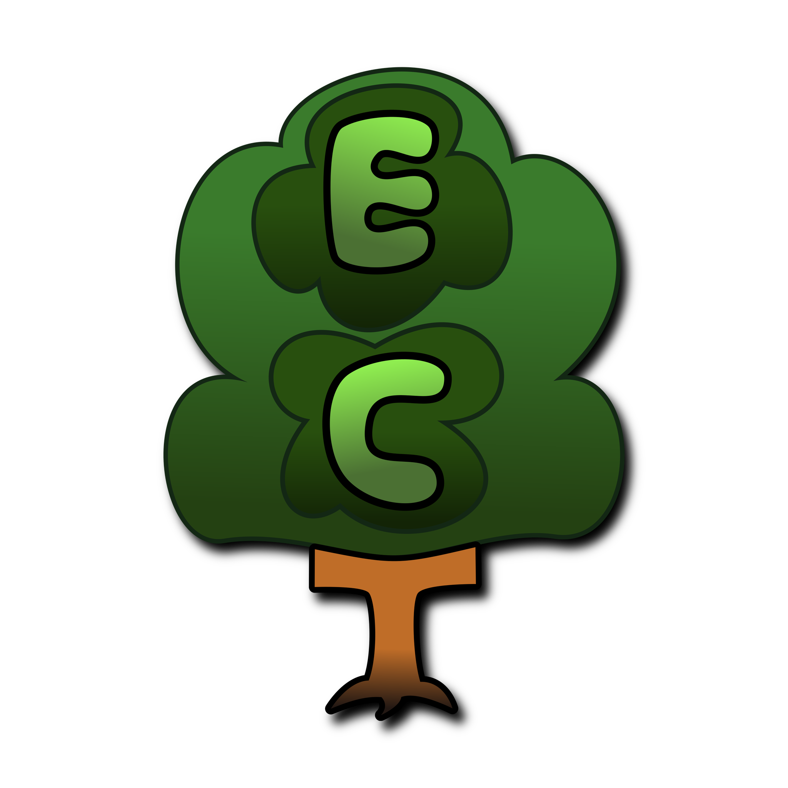

FRAMEWORKS
Entity Component Tree
Entity Component Tree (ECT) is an Entity Component System (ECS) framework for Unity.
This framework is ease-of-use oriented, built to be familiar while still reaping the rewards associated with ECS such as:
• Efficiency
• Modularity
• Scalability
• Flexibility
The modular design incorporated in ECT makes it very easy to reuse code across your entire project, as well as placing more power into the hands of artists by allowing them to easily change the behavior of an entity by dragging and dropping modules.
ECT also utilizes Unity Jobs to allow for easy and safe multithreaded systems.
This framework is ease-of-use oriented, built to be familiar while still reaping the rewards associated with ECS such as:
• Efficiency
• Modularity
• Scalability
• Flexibility
The modular design incorporated in ECT makes it very easy to reuse code across your entire project, as well as placing more power into the hands of artists by allowing them to easily change the behavior of an entity by dragging and dropping modules.
ECT also utilizes Unity Jobs to allow for easy and safe multithreaded systems.

Anvil
Anvil is a Unity GUI framework for building complex editor extensions as easily as possible.
Greatly simplifying the process of creating an editor extension while losing absolutely no control, Anvil is extremely beneficial for not only prototyping, but for building final tools as well.
The Anvil framework uses a recursive and modular design.
This means rather than building the GUI in one go, you build pieces that are reused.
Nodes in Anvil can be used universally across different GUI types such as;
inspectors, windows, and even property drawers.
Greatly simplifying the process of creating an editor extension while losing absolutely no control, Anvil is extremely beneficial for not only prototyping, but for building final tools as well.
The Anvil framework uses a recursive and modular design.
This means rather than building the GUI in one go, you build pieces that are reused.
Nodes in Anvil can be used universally across different GUI types such as;
inspectors, windows, and even property drawers.
TOOLS
Entity Component Tree
Aether provides atmospheric volumetric fog and lighting effects to the Unity Universal Render Pipeline (URP) using a frustum-aligned voxel approach.
Unity only officially supports volumetric fog in the High Definition Render Pipeline (HDRP), but in some cases using the HDRP is overkill.
This plugin provides a fast and scalable solution to volumetrics that can be utilized in URP.
This tool allows artists to easily configure "Fog volumes" to handcraft volumetrics into their environments.
Unity only officially supports volumetric fog in the High Definition Render Pipeline (HDRP), but in some cases using the HDRP is overkill.
This plugin provides a fast and scalable solution to volumetrics that can be utilized in URP.
This tool allows artists to easily configure "Fog volumes" to handcraft volumetrics into their environments.
.png)
.png)
.png)
Blades
Blades is a GPU-instanced detail renderer that for rendering lots of details (such as grass).
This allows artists to create large, highly detailed, and immersive environments.
The Blades renderer features frustum culling, distance culling, and LODs to keep framerates as low as possible.
Artists have access to the Blades Tool, which allows them to paint details directly onto the environment using a brush, or even fill large landscapes automatically with the press of a button.
By default, colors are applied automatically using the color of the surface being painted on, but any and all detail properties can be overwritten by artists to sculpt the look of the environment to their liking.
Blades also features Unity ShaderGraph support, allowing developers to extend Blades by creating custom detail effects/features.
This allows artists to create large, highly detailed, and immersive environments.
The Blades renderer features frustum culling, distance culling, and LODs to keep framerates as low as possible.
Artists have access to the Blades Tool, which allows them to paint details directly onto the environment using a brush, or even fill large landscapes automatically with the press of a button.
By default, colors are applied automatically using the color of the surface being painted on, but any and all detail properties can be overwritten by artists to sculpt the look of the environment to their liking.
Blades also features Unity ShaderGraph support, allowing developers to extend Blades by creating custom detail effects/features.
OTHER
Nuclei
Nuclei is an innovative and unique technology with the intention of a programming backend that multiple languages can compile into.
The Nuclei Stack has three main components:
• The Nu-Interpreter
• The Nu-Core
• The Nu-Embedder
The Nu-Interpreter library is responsible for taking written code and compiling it into Nu-Assembly, a low-level universal code representation.
The Nu-Core is responsible for actually executing Nu-Assembly.
The Nu-Embedder library gives developers the ability to embed Nuclei into other projects (such as a Unity project).
The Nuclei Stack has three main components:
• The Nu-Interpreter
• The Nu-Core
• The Nu-Embedder
The Nu-Interpreter library is responsible for taking written code and compiling it into Nu-Assembly, a low-level universal code representation.
The Nu-Core is responsible for actually executing Nu-Assembly.
The Nu-Embedder library gives developers the ability to embed Nuclei into other projects (such as a Unity project).
Multimodal Scene Voxelization
Multimodal scene voxelization (MSV) presents a pioneering technique for achieving real-time calculations across diverse domains in computer science, simulation, and entertainment. By harnessing baked data to represent scenes on the GPU, MSV unlocks the potential for advancements in global illumination, spatial audio, pathfinding, and physics simulations.
MSV revolutionizes the way scenes are represented and utilized across multiple computational domains. This hybrid approach capitalizes on the GPU's capabilities to process and render voxelized data in real-time. MSV amalgamates high-detail baked asset representations with a novel chunk-based scene representation, facilitating efficient calculations for diverse applications such as global illumination, spatial audio simulation, pathfinding algorithms, and dynamic physics.
MSV revolutionizes the way scenes are represented and utilized across multiple computational domains. This hybrid approach capitalizes on the GPU's capabilities to process and render voxelized data in real-time. MSV amalgamates high-detail baked asset representations with a novel chunk-based scene representation, facilitating efficient calculations for diverse applications such as global illumination, spatial audio simulation, pathfinding algorithms, and dynamic physics.
Project Eden
Project Eden is a server for a chat service built using C# and LiteDB.
This service supports the following:
• User account creation
• User logins with Auth-Tokens
• Multiple sub-profiles per-user with unique names and profiles
• Channels
• Messages
This service supports the following:
• User account creation
• User logins with Auth-Tokens
• Multiple sub-profiles per-user with unique names and profiles
• Channels
• Messages